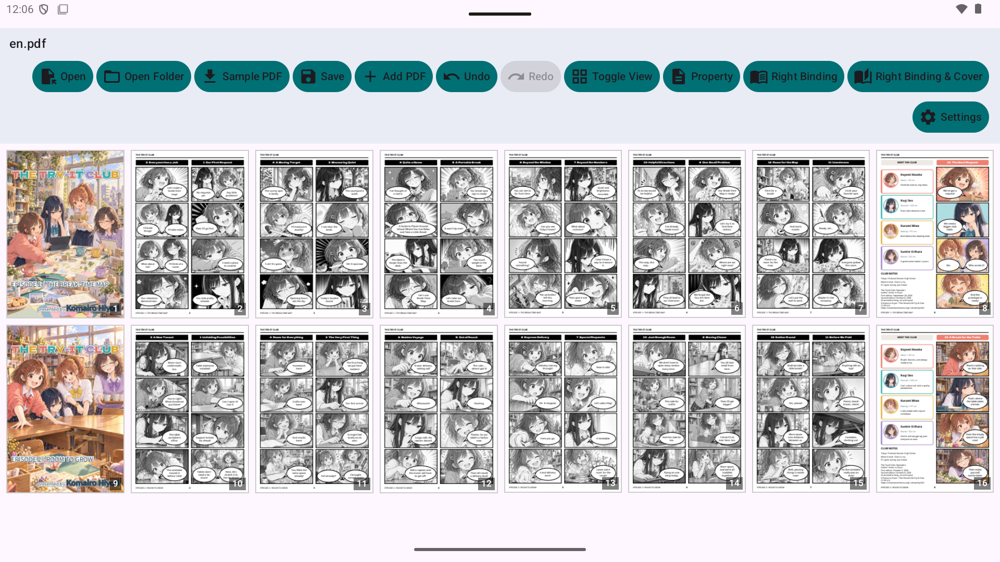
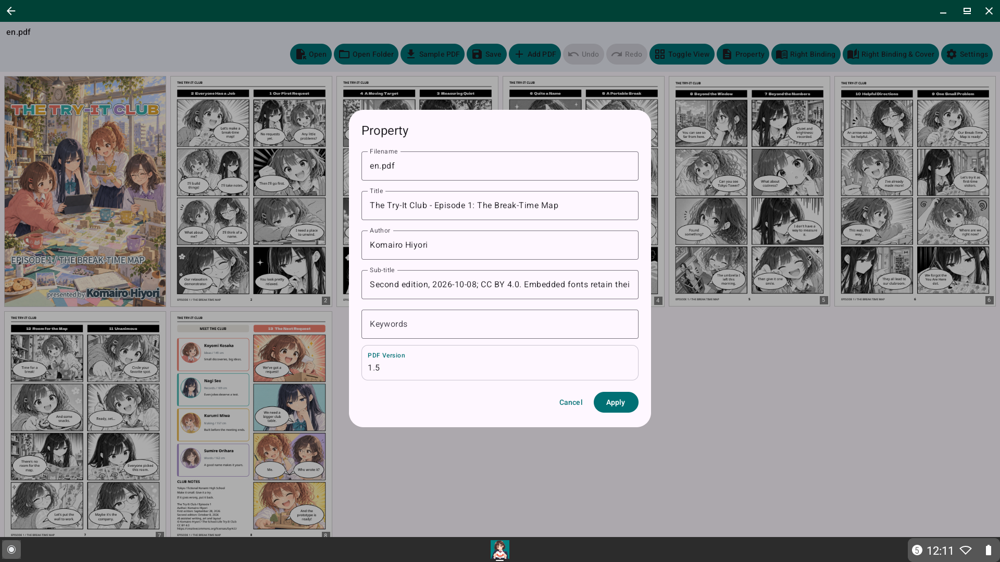

Mihiraki: PDF Utility
Organize work, study, and submission documents or manga with intuitive PDF tools.
Production is not publicly released. Publication readiness and X test-announcement check (November 23, 2026; Japanese)
Organize work, study, and submission documents or manga with intuitive PDF tools.
Mihiraki PDF Utility is a feature-rich tool designed for readers and creators. Whether you're organizing scanned books (Jisui), merging documents, or reordering pages, our intuitive interface makes it effortless.

View two pages side-by-side. Supports both LTR and RTL reading directions for manga and books.

Split double-page spreads into individual pages. Supports vertical and horizontal splitting.

Organize your PDF by simply dragging thumbnails. Move single or multiple pages at once.

Combine multiple PDF files into a single document easily.

Run in-app comprehensive diagnostics and benchmark tests (functional tests, editing feature tests, 1000-page load tests, search performance tests) using dynamic in-app generated test PDFs, and review privacy-protected local audit logs (24-hour retention, offline processing with no external transmission).
Adaptive layout: horizontal menu bar at widths of 840 dp or more, and a categorized, scrollable bottom sheet menu on smaller screens, plus customizable toolbar buttons via Options.
Guided step-by-step tutorial screen for first-time users with a "Don't show again" option, instant sample PDF trial, and re-triggerable help.
The app is designed to provide a seamless experience across various Android form factors, including phones, tablets, and desktop environments like ChromeOS.



Download sample PDF manga to test the app:
51 PDFs in 14 languages and 17 language/region variants, with three episodes each. Spain and Latin America, Brazil and Portugal, and Taiwan and Hong Kong have separate filters. The Hong Kong edition uses standard written Chinese, not colloquial Cantonese. Downloads are verified against their expected size and SHA-256; older PDFs are retained.
"The Try-It Club" Episodes 1 & 2
© 2026 Komairo Hiyori
Parts of this work for which the publisher holds copyright and other licensing rights are provided under the Creative Commons Attribution 4.0 International License (CC BY 4.0).
When reusing this work, please display the work title, author name "Komairo Hiyori", the source of the original work, and a link to the license, and clearly indicate if any changes were made.
Generative AI was used in the production of text and images, as well as the translation of this work. Materials with rights held by third parties, such as fonts, are subject to their respective licenses. Nothing in this license constitutes a restriction on the use of material that is not protected by copyright or similar laws.
Download sample manga in 14 languages and 17 regional variants, with 3 episodes each (51 PDFs). Downloads for older app versions remain available.
These videos are in English and open on YouTube.